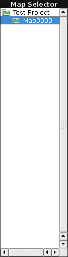
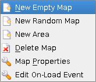

|  |
This is the map selection area. All of the maps are listed in a tree structure underneath the project. Left clicking on a map will display it in the map editor section. Left clicking on an area will display the parent map in the map editor section and allow to edit the selected area. |
|
Right clicking on a map will open the following context menu: 
|